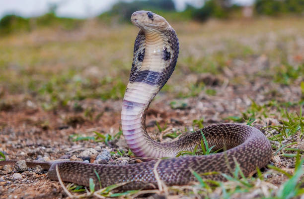

Top 3 cobras
Agressivas
- Jararaca
- Taipan costeira
- Cobra-real
Inofensivas
- Cobra do milho
- Falsa Coral
- Gopher
Onde as cobras vivem?
Elas podem viver no solo, nas árvores, na água doce. A vida de uma serpente no seu hábitat é bem diferente da de uma serpente doada ao Butantan – no instituto chegam animais apreendidos pelas autoridades ambientais ou trazidos por pessoas que os encontram em suas casas.
-

- 
Como as cobras dormem?
O que acontece, é que as cobras não possuem pálpebras móveis, logo, elas nunca piscam ou fecham os olhos. Mas, assim como os outros animais, as cobras também necessitam de repouso e dormem, mesmo que de olhos abertos.